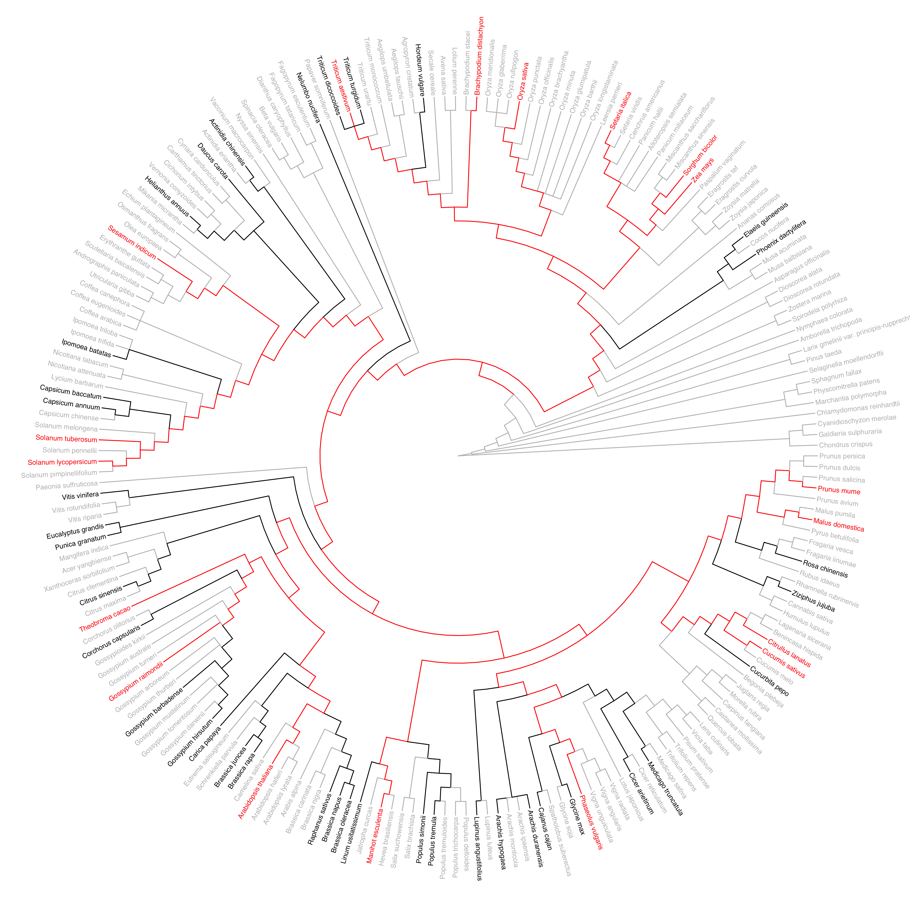
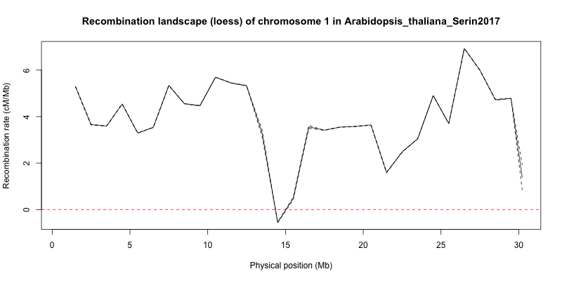
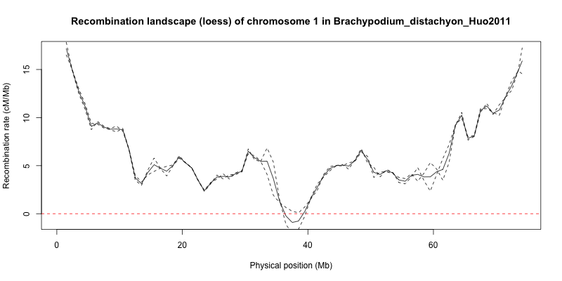
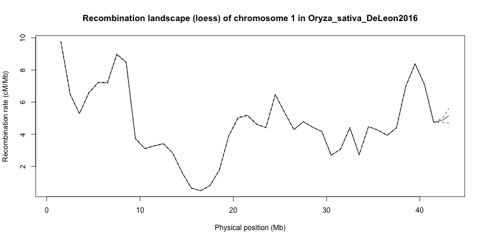
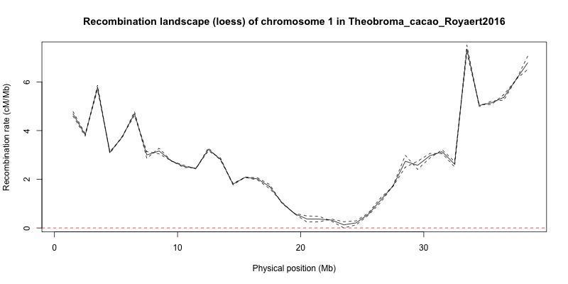
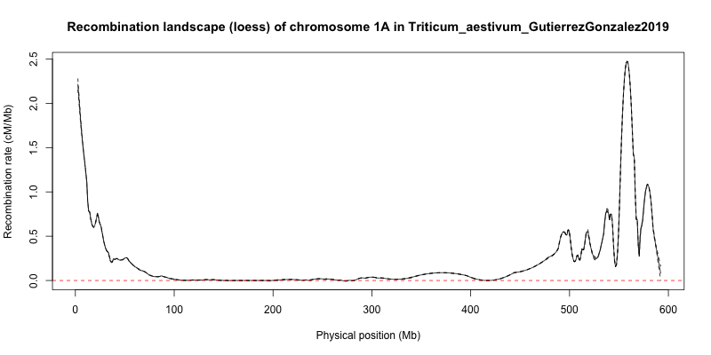
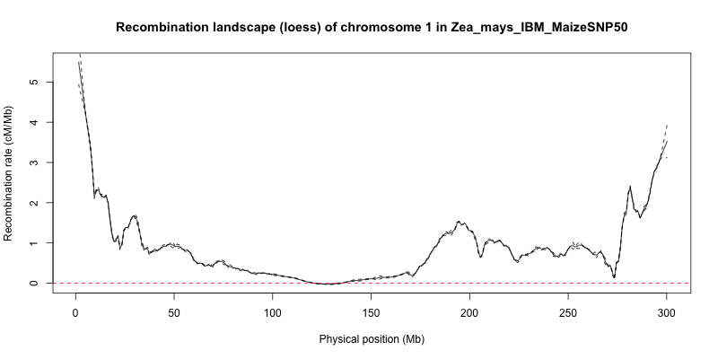

An overview on recombination landscapes across Angiosperms
Meiotic recombination is a crucial mechanism for eukaryotes involved in genome evolution. Because recombination enhances genetic shuffling during the meiosis, it constantly produces new genetic combinations and enhances genetic diversity in populations. Recombination decreases the genetic linkage between loci, hence counteracting interferences between linked loci (the Hill-Robertson interference) and enhancing the efficacy of selection (Hill & Robertson, 1966). By reducing allelic correlations, the recombination increases genetic variation and efficiently purge deleterious mutations. Meiotic recombination events also imply molecular consequences, with DNA double strands break (DSB) and repair mechanisms of homologous sequences are generally biased toward GC nucleotides in a lot of species (Galtier et al., 2001; Duret & Galtier, 2009; Glémin et al., 2015; Rousselle et al., 2019).
Then, reliable estimates of local recombination rates along the genome, also defined as recombination landscapes, are highly relevant in the study of genome evolution, as they may help to understand how species respond to selection and adapt to their environment. Variation in Genome Wide Recombination Rates (GwRR) have been recently reviewed in Eukaryotes, in regard to the many drivers of recombination, from individual to distantly related species levels (Stapley et al., 2017). Yet, this review proved the need for a broad-scale study of the recombination landscapes, i.e. the distribution of the recombination rate within the chromosome. Angiosperms present a high variation of genome architecture, with a 55-fold variation in genome size and 10-fold in number of chromosomes, associated to chromosomal rearrangements (chromosomal inversions, gene duplications). Besides, genomic features such as the local recombination rate, gene density or the nucleotide composition (GC content) vary greatly, and recombination is suspected to directly interact with many genome evolution processes, such as transposable elements (TE) or GC-biased gene conversion (gBGC) (Gaut et al., 2007). Although, the study of nucleotide composition is still recent compared to metazoans, especially mammals, and recombination landscapes still need to be explored across the overall Angiosperms taxa. Thus, the comparison of recombination and genomic landscapes is promising in the understanding of patterns of recombination at a large phylogenetic scale for a taxonomic group of high ecological importance.
Based on a comparative genomic approach, we'll try to assemble a large dataset of Angiosperms' recombination landscapes to assess the variation of the recombination rate as a function of genome architecture and genomic features. Once published in a public database, these recombination landscapes should be a great advance for the scientific community that would like to test evolutionary hypotheses on a rich broad-scale dataset compared to genomic or ecological data of their own (e.g. life history traits, reproductive system). This project is the first part of my PhD thesis about recombination landscapes and genome evolution in Angiosperms, and I am supervised by Sylvain Glémin (CNRS/ECOBIO).

Estimating recombination rates
Marey maps
We already have a first validated dataset of 18 Marey maps produced with a standardised pipeline and waiting to be integrated in further analyses. You can see below examples of what is a validated Marey map (click on a thumbnail to display the map in full resolution), with a consistent marker order (orders must be in the same order in both genetic and physical maps). Marey maps must show a monotonic increasing function to be validated.


Download summary statistics of Marey maps (csv)...
Recombination landscapes
A selection of recombination landscapes estimated by LOESS regression on windows of 1Mb. The local recombination rate (cM/Mb) is the derivative in a point of the Marey map, estimated by a LOESS function fitting the data. Dashed lines represent the CI at 95%. The intensity of the smoothing, parameterized by the span value, was optimized with K-fold cross validation in order to avoid overfitting.





